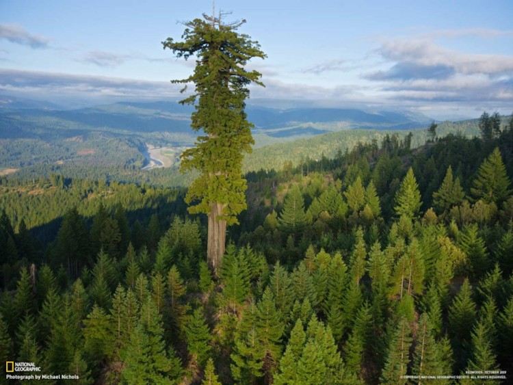

- 나무
- 곰
- 말
나무란 무엇인가
나무질로 된 줄기 또는 가지를 가진 여러해살이 식물을 통틀어 이르는 말
흔히 지구에서 가장 거대한 단일 생명체라고 알려져 있다.
일견 가장 큰 단일 생명체라는 Armillaria ostoyae라는 버섯은 단일 개체인지 불분명하거니와
무게는 605톤 정도밖에 안 되는 것으로 추정된다. 거대한 나무로 손꼽히는 미국의 제너럴 셔먼 나무의 키는
현재 83.8m, 추정 무게는 1938년 당시 1,910톤에 달한다.[3] 심지어 이 나무는 2200년을 살았다고 한다.

나무가 무엇인지는 누구나 다 알지만 막상 엄밀하게 정의되지 않는 식물의 분류다.
식물에는 관목(덤불 나무)이나 대나무, 야자수 등 나무 비슷하게 생겼으면서도 생태가 다른 것들이 많기 때문이다.
흔히 쓰는 넓은 의미로서의 나무는, 위로 어느 정도 이상 높이 자라며 잎이나 줄기가 달린
길다란 나무 기둥이 있는 식물을 뜻한다. 좁은 의미의 나무로는 목질의 나무 기둥을 가졌으며
이 기둥이 길이뿐만 아니라 굵어지는 쪽으로도 생장(2차 생장)을 하는 식물을 뜻한다.[4]
좁은 의미의 나무에는 다음 식물들이 포함되지 않는다.